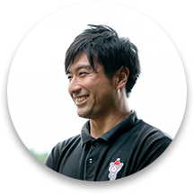
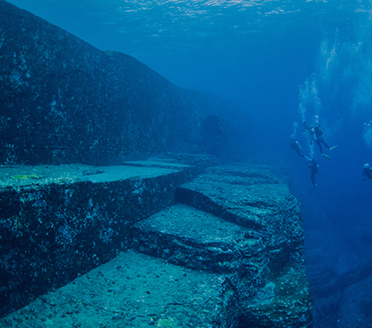
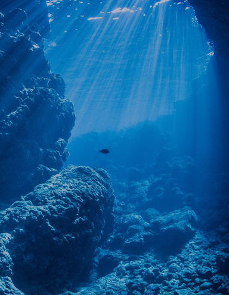
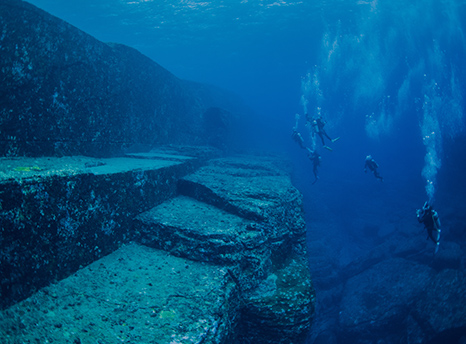
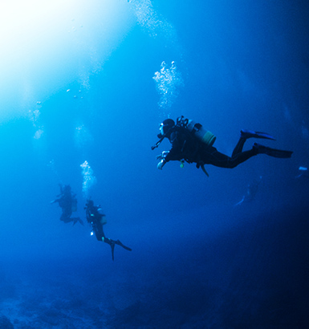
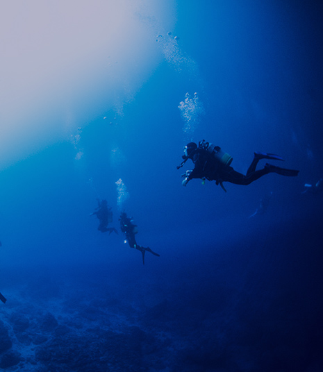

Service
-

初學者也可安心
全部計劃（潛水的執照課程除外）也有指導員安裝潛水裝備。
除了第一次、或是不熟悉水肺潛水的人外，已獲得執照的人也可安心潛水。 -
安全的水肺潛水
在本店，每兩位顧客就有一名指導員跟隨。
即使是不熟悉水肺潛水的人也可以安心地享受潛水的樂趣。
而且，我們會根據客人的水平來提供適合客人的計劃，請隨時向我們查詢。 -

提供中文服務
本店有多名會說中文的指導員。
從預訂到潛水當天、只用中文也ＯＫ！
就算只會說中文也完全沒問題！
指導員介紹

- 海野 浩二
- 沖繩縣出身，成為介紹指導員已有十年，經驗非常豐富。
除了日文以外也能使用中文指導。
更會細心指導初次接觸水肺潛水的朋友！
Diving Points
除此以外還有很多不同的潛水景點。請隨意查詢。
-


慶良間群島
-


座間味島
水納島
-


與那國島
青之洞窟
-


青之洞窟
與那國島
-


水納島
座間味島
-


宮古島
Corse

-
\ 初學者 /體驗水肺潛水
- ¥19,800~
- 初學者也能放心。
客人會在能站穩腳跟的專用遊泳池中練習後才進行潛水。
難得的沖繩海洋，只是看看便太可惜了！
預訂